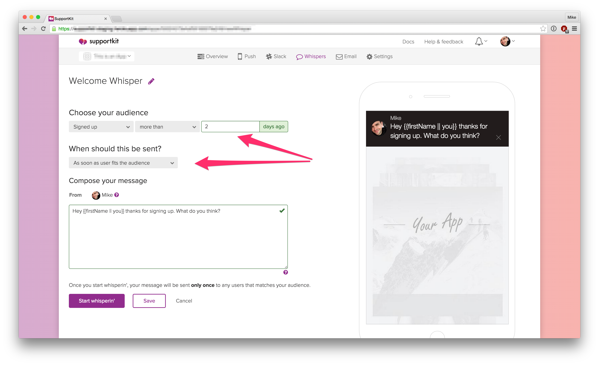
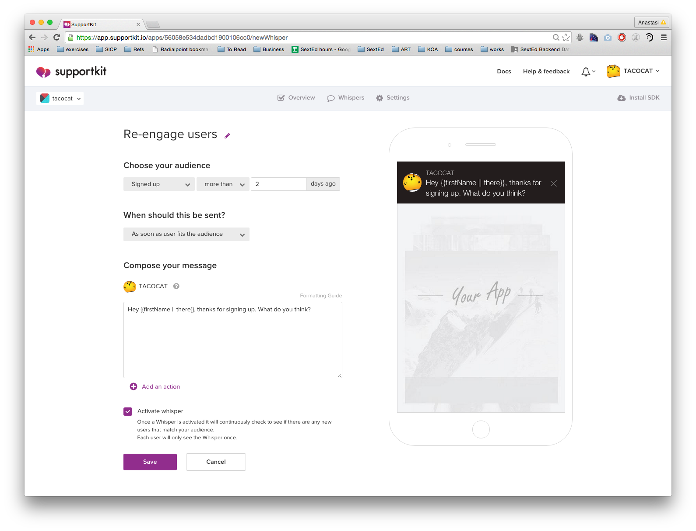

Welcome
Smooch lets you have rich conversations with your users, right in your app or on your website. If you want to learn more about Smooch, then visit our website at http://smooch.io or sign up here. This page provides in-depth documentation on Smooch’s features and is meant to be a guide for developers integrating the SDK and app makers seeking to engage with their users.
Source code examples are provided for all of our SDKs, including both Objective-C and Swift for iOS. You can view code examples inline, and you can switch the programming language of the examples with the tabs in the top left.
If you have any other questions, feel free to reach out to us here.
References
For more in-depth details on Smooch’s APIs check out our API Reference documentation. The API reference documents every method and property available through Smooch.
Upgrading to Smooch
Upgrading the SDKs to Smooch requires some changes to your existing code. These changes are documented in our upgrade guides:
Adding Smooch to your site

There are a few ways you can include the Smooch plugin on your web page.
The easiest way to get started is using the Script Tag method, but you can also include it using bower or npm.
Script Tag Method
Step 1: Include the Smooch plugin on your web page
Add the following code towards the end of the body section on your page. Placing it at the end allows the rest of the page to load first.
<script src="https://cdn.smooch.io/smooch.min.js"></script>
Step 2: Initialize Smooch with your new app token
Once Smooch has been included on your web page, you’re almost done. Simply initialize the plugin using this code snippet
<script>
Smooch.init({appToken: 'your_app_token'});
</script>
npm and browserify
npm install smooch
In your code:
var Smooch = require('smooch');
Smooch.init({appToken: 'your_app_token'});
bower
bower install smooch
In your code:
Smooch.init({appToken: 'your_app_token'});
Google Tag Manager
You can load Smooch’s web widget through Google Tag Manager. Simply connect to your Google Tag Manager account, go inside your container and follow the guide below.
1. Create a new Tag and give it a cute name like “Smooch”
On your Google Tag Manager dashboard, create a new tag and rename it “Smooch”.

2. Select “Custom HTML Tag”
At the end of the product list, click on “Customer HTML Tag” and continue.

3. Paste Smooch’s code snipet
Paste the code below in the suggested text field. Make sure to replace ‘your-app-token’ with your Smooch’s app token.
<script src="https://cdn.smooch.io/smooch.min.js"></script>
<script>
Smooch.init({ appToken: 'your-app-token'});
</script>

4. Select to Fire On “All Pages”
Choose the trigger “All Pages” to fire the initialization of our widget when the page loads.

5. Save Tag and Publish
You’re almost there. Save your Tag and don’t forget to publish your changes. You might need to clear the recent the cache and reload your web page to see the widget.
Wordpress
To install Smooch on your Wordpress site, you need to download our plugin and install it through Wordpress.
- Download the ZIP from our plugin github page
- Connect on your Wordpress dashboard and go on the plugin section
Click on “Add New” and then “Upload Plugin”

Choose the plugin and click on “Install Now”.
In your Wordpress settings, click on “Smooch”. Paste your app token in the appropriate text field.

Ghost
You are wondering how to load our widget on your Ghost blog. First connect to your Ghost dashboard (your-website.com/ghost). Go to the Code Injection menu (on the navigation left bar).
In the Blog Footer section, paste our initialization code.
<script src="https://cdn.smooch.io/smooch.min.js"></script>
<script>
Smooch.init({ appToken: 'your-app-token'});
</script>

And don’t forget to click on Save!
Zendesk Help Center
Zendesk Help Center is a self-service support software that provides a knowledge base for your team and customers.
Follow the instructions below to add Smooch into your Zendesk Help Center:
1. Connect to your Help Center dashboard and customize your theme
On your Zendesk Help Center dashboard, click on the “General” menu and then “Customize design”.

2. Add Smooch javascript code to the footer of your theme
On the newly displayed sidebar, click on “edit theme”.

Then, on the theme edition dashboard, select “footer” on the first dropdown menu.

Paste the code provided below just before the ending footer tag.
<script src="https://cdn.smooch.io/smooch.min.js"></script>
<script>
Smooch.init({ appToken: 'your-app-token'});
</script>

3. Save and publish!
Click save and don’t forget to publish your work.

Configuring agent images
You can set an app maker’s image in your app (as pictured below) by creating a Gravatar image associated with the app maker’s email address.

Web Messenger
Alternate Channels
The Web Messenger supports the ability for users to find and reach out to you on any channel you support. In order to offer additional channels, simply integrate with whichever messaging channel you please and it will automatically be added to the list.


User linking
If a user starts chatting with you and would like to continue the chat on another messaging channel such as Facebook Messenger, they will have the option to link their Facebook account and continue that same conversation.
These conversations will be merged automatically, allowing you to reply to the customer from the same thread wherever they choose. When you reply to your user, Smooch will intelligently detect which messaging channel they most recently used and make sure that a user doesn’t get spammed with push notifications if they happen to have multiple messaging channels linked.
For example, if a user visits your site and would like to close the tab, they can choose to ‘Send to Messenger’. This will connect their conversation to Facebook Messenger and allow them to close the tab and move on.

Users
User data
Smooch allows you to specify profile information about your users so that you can better understand the context around a user’s message.
Smooch.init({
appToken: 'your_app_token',
givenName: 'Doctor',
surname: 'Who?',
email: 'the-doctor@smooch.io',
properties: {
'customProp': 'whatever you please'
}
});
Naming the current user
Once you set the user’s name it will be persisted by Smooch so any future message from this user contain the value you provided. If the user’s information changes, simply call the method a second time and the new information will overwrite it.
#import <Smooch/Smooch.h>
[SKTUser currentUser].firstName = @"Doctor";
[SKTUser currentUser].lastName = @"Who";
#import <Smooch/Smooch.h>
SKTUser.currentUser().firstName = "Doctor"
SKTUser.currentUser().lastName = "Who"
import io.smooch.core.User;
User.getCurrentUser().setFirstName("Artour");
User.getCurrentUser().setLastName("Babaev");
Smooch.updateUser({
givenName: 'Doctor',
surname: 'Who'
})
You can either update the user right after the initialization using “.then”:
<script>
Smooch.init({
appToken: 'your-app-token',
emailCaptureEnabled: true
})
.then(function() {
Smooch.updateUser({
givenName: 'New',
surname: 'Name'
})
})
<script>
Or you can update the information by binding your event before calling Smooch.init() with the method Smooch.on(‘ready’) like below:
Smooch.on('ready', function(){
Smooch.updateUser({
givenName: 'New',
surname: 'Name'
})
});
Smooch.init(...);
Setting the user email address
Setting the user’s e-mail makes this information available in the user profile and allows Smooch to lets you see their gravatar.
#import <Smooch/Smooch.h>
[SKTUser currentUser].email = @"bob@example.com";
#import <Smooch/Smooch.h>
SKTUser.currentUser().email = "bob@example.com"
import io.smooch.core.User;
User.getCurrentUser().setEmail("2ez@4rtz.com");
Smooch.updateUser({
email: 'the-doctor@smooch.io'
})
Setting or updating the user email will send a notification inside your configured business system. Here’s how it looks in Slack for example :

Setting the signed up date
Setting the user’s signed up date allows Whispers based on that date to be sent to the right people. If not set, we’ll default to the first time Smooch sees the user, which is the moment the init call is made for the first time for a given user. It’s best to set it yourself to avoid sending a welcome message to users that in fact signed up a long while ago.
#import <Smooch/Smooch.h>
[SKTUser currentUser].signedUpAt = [NSDate date];
#import <Smooch/Smooch.h>
SKTUser.currentUser().signedUpAt = NSDate()
import io.smooch.core.User;
User.getCurrentUser().setSignedUpAt(new Date(1420070400000l));
Smooch.updateUser({
signedUpAt: new Date("Nov 6, 2013")
})
Adding custom profile information
You can also specify any other kind of profile information that will be sent along when users contact you. You can also use any properties you store using this API to send targeted messages to your users proactively using our Whispers feature.
#import <Smooch/Smooch.h>
[[SKTUser currentUser] addProperties:@{ @"nickname" : @"Lil Big Daddy Slim", @"weight" : @650, @"premiumUser" : @YES }];
#import <Smooch/Smooch.h>
SKTUser.currentUser().addProperties([ "nickname" : "Lil Big Daddy Slim", "weight" : 650, "premiumUser" : true ])
import io.smooch.core.User;
final Map<String, Object> customProperties = new HashMap<>();
customProperties.put("customDate", new Date());
customProperties.put("customFlag", true);
customProperties.put("customDigit", 322);
User.getCurrentUser().addProperties(customProperties);
All user properties are optional, so the object you pass into init could also look as simple as:
{appToken: "your_app_token", givenName: "Trogdor"}
Sensitive user data
Smooch sends messages using standard encryption protocols, but in order to keep your users completely safe, the best way is to inform your users they should never send sensitive data through Smooch messages, for example: credit card numbers, passwords, sensitive documents, and private photos.
Smooch allows you to identify new users on the fly, engage with them in a single conversation thread across multiple devices, and associate user and device profile information so that you can better understand the context of a user’s message.
Users on multiple devices
You may have users using your app on multiple devices. For example, suppose they have your app installed on both their iPhone and their iPad. You might also have Smooch integrated in both your mobile app as well as on your web site.
If you want the user to see the same conversation across devices you can do so by assigning your users a userId. This will link a user across all devices and platforms that have integrated with your Smooch app. Specifying a userId also facilitates user authentication.
The userId is a string that can be an email, GUID, or an existing ID from your own user directory. The userId must be unique within a given Smooch app, and it will only link devices within a single Smooch app.
After Smooch has been initialized, you can set the userId using the login API:
[Smooch login:yourUserId jwt:nil];
Smooch.login(yourUserId, jwt:nil)
Smooch.login(yourUserId);
Smooch.login(yourUserId, null);
In most use cases Smooch is initialized synchronously as your app loads. For this reason, once you’ve set your user’s userId for the first time it is recommended that you store that userId locally on the device so that it does not need to be fetched again the next time the user opens the app. If your app knows the userId at app boot time, instead of calling login you can specify the userId during Smooch initialization like so:
SKTSettings* settings = [SKTSettings settingsWithAppToken:@"YOUR_APP_TOKEN"];
settings.userId = yourUserId;
[Smooch initWithSettings:settings];
var settings = SKTSettings(appToken: "YOUR_APP_TOKEN")
settings.userId = yourUserId
Smooch.initWithSettings(settings)
Smooch.init({
appToken: 'YOUR_APP_TOKEN',
userId: yourUserId
});
Settings settings = new Settings("YOUR_APP_TOKEN");
settings.setUserId(yourUserId);
Smooch.init(this, settings);
Omitting the userId
Smooch will work perfectly fine without a userId. Profile information can still be included but the user will only be able to access the conversation from the device they’re currently using. This means that even if you specify the same profile information, if the same individual opens Smooch on a new device, or runs your web app in an incognito browser session, they will see a newly created empty conversation when they open Smooch. Only the userId can be used to synchronize a conversation across devices.
A userId can also be omitted at first and added at a later time. If you deploy an update to your app that assigns an existing user with a new userId that they didn’t have before, any existing conversation history they have will be preserved and their messages will start being synchronized across all devices where that userId is being used. This is particularly useful if a user opens Smooch and starts a conversation before having logged in to your app.
Switching users
If your app allows a shared device to switch between multiple user identities you can call the login API multiple times to switch between different userIds.
Logging out
Your app may have a logout function which brings users back to a login screen. In this case you would want to revert Smooch to a pre-login state. You can do this by calling the logout API.
Calling logout will disconnect your user from any userId they were previously logged in with and it will remove any conversation history stored on the device. Logging out will not disable Smooch. While logged out, the user is free to start a new conversation but they will show up as if userId was omitted during Smooch initialization.
[Smooch logout];
Smooch.logout()
Smooch.logout();
Smooch.logout();
Authenticating users (optional)
Provided you’re assigning userIds to your users, you can authenticate users to Smooch by issuing signed JSON web token (JWT) credentials. This option requires your app to be connected to your own secure web service, or to a 3rd party equivalent such as parse.com. There are JWT libraries available supporting a wide variety of popular languages and platforms.
To issue JWTs:
Generate a secret key for your Smooch app. You can do this from the Smooch dashboard under the Settings tab.

Implement server side code to sign new JWTs using the key ID and secret provided. The JWT header must specify the key ID (
kid). The JWT payload must include ascopeclaim of ‘appUser’ and auserIdclaim which you’ve assigned to the app user.A node.js sample is provided below:
var jwt = require('jsonwebtoken'); var KEY_ID = '55e9f9bf7a0ce5ca2d429c17'; var SECRET = 'BFJJ88naxc5PZNAMU9KpBNTR'; var signJwt = function(userId) { return jwt.sign({ scope: 'appUser', userId: userId }, SECRET, { headers: { alg: 'HS256', typ: 'JWT', kid: KEY_ID } }); }Issue a JWT for each user. You should tie-in the generation and delivery of this JWT with any existing user login process used by your app.
Specify the JWT when calling
loginon the client:[Smooch login:yourUserId jwt:yourJwt];Smooch.login(yourUserId, jwt:yourJwt)Smooch.login(yourUserId, yourJwt);Smooch.login(yourUserId, yourJwt);
Securing a userId happens automatically by using a JWT for the first time. Once a JWT is used to authenticate an individual userId with Smooch, that specific userId will require a JWT credential in all future init or login calls made to Smooch.
Once you’ve issued a userId and JWT to a user for the first time you can save them to the device locally. Having done this, instead of making a separate call to login you can provide Smooch with the userId and JWT parameters during app initialization:
SKTSettings* settings = [SKTSettings settingsWithAppToken:@"YOUR_APP_TOKEN"];
settings.userId = yourUserId;
settings.jwt = yourJwt;
[Smooch initWithSettings:settings];
var settings = SKTSettings(appToken: "YOUR_APP_TOKEN")
settings.userId = yourUserId
settings.jwt = yourJwt
Smooch.initWithSettings(settings)
Smooch.init({
appToken: 'YOUR_APP_TOKEN',
userId: yourUserId,
jwt: yourJwt
});
Settings settings = new Settings("YOUR_APP_TOKEN");
settings.setUserId(yourUserId);
settings.setJWT(yourJwt);
Smooch.init(this, settings);
Action Buttons
Action buttons can be used for a variety of different purposes, and come in many forms. The current supported types of actions are:
- Link Buttons - Used to refer the user somewhere else (a webpage, phone number, mailto, deep link, etc.).
- Buy Buttons - Used to request payment from the user.
- Reply Buttons - Used to present the user with suggested reply options. Cannot be mixed with other action types.
- Postback Buttons - Used to trigger server-side logic when pressed.

Links
You can send your users an action button with the following syntax:
%[Button label here](http://anyurl.com)
This works from any channel you configured to use with Smooch.
When the user taps your button, it’ll open whatever link you specified in a new tab.
Replies
Reply buttons are a great way to walk the user through a specific flow, by suggesting various courses of action. A reply button, once tapped, will insert a reply on behalf of the user. Suggested replies are invaluable when building a bot or automated conversation flow, because they keep your user focused and provide clear instructions on how to proceed.
Each reply button has an associated payload, which should uniquely identify the intent of the action. When the user answers with one of the suggested replies, this payload will be included as part of the message object. The message will then be delivered as a normal message, appearing in any business system integrations, and delivered to webhooks subscribed to the message:appUser event.
You can send a reply button with the following syntax:
%[Button label here](reply:PAYLOAD_HERE)
Postbacks
Postback buttons are a great way to enhance your conversations, since they can trigger server-side logic when a user clicks on them. When you send the postback button, you can attach a payload and when the user clicks on it, it will trigger webhooks listening to the postback trigger. The payload associated with the action clicked by the user will be included in the webhook body. This allows you to respond to the press of a button from your backend. The server-side logic can use the payload to run different code based on the context of the conversation. These features are very useful when building a bot.
Postback buttons are similar in function to reply buttons, but with a few key differences:
- Postbacks are multi-use. The button does not disappear after the user taps on it, and therefore it can be clicked many times.
- Postbacks do not echo the user’s selection in the conversation history.
- Postbacks use the
postbackwebhook event, rather than themessage:appUserevent.
You can send your users a postback button with the following syntax:
%[Button label here](postback:PAYLOAD_HERE)
Images
To send the user an image from one of your Business System integrations, use the following syntax with a publicly visible web url:

This works from any channel you configured to use with Smooch. You can also use the REST API to upload images.
Business App Integrations
The Email integration allows you to receive Smooch messages in your inbox.
If Email is enabled, when users send you a message using Smooch, you will receive an email at the configured address(es). This e-mail contains the user’s message, device information, and any profile information about the user that you captured in your app. You can respond to your user’s message by responding directly to the email.

Getting help from your team
If you want multiple team members to respond to your Smooch requests, you can specify multiple email addresses, or use a mailing list. Whenever a team member replies, the incoming email address and associated name will be used to determine the team member displayed to the user alongside the message.
Slack
Slack is a communication tool that combines the best things about chat, email and the web to group all of your team’s conversations and workflow into one beautiful, searchable place.
Smooch has a Slack integration that allows your team to effortlessly speak to your app’s users, without leaving Slack.
Configuring Slack
Click the “Connect to Slack” button on the Slack integration page.

This will send you to a Slack page where you will choose which slack team you want to add Smooch to, and it will show you the set of permissions Smooch is requesting in order to function. Once all is done, you’ll be redirected back to Smooch. That’s it, you’re up and running.
When users send you messages, Smooch posts them to Slack. If it’s a new conversation, a notification will appear in your dispatch channel in Slack. Smooch will choose #general as your dispatch channel by default, and you can change this if you wish. The dispatch notification contains a link to a channel associated to the specific user that sent you the message.
By default, Smooch will generate random channel names for users who start conversations. If you want the channel names to be relevant, you must add a first name, last name or email to the user.
Talking to the User
From a channel associated with a user, you can get more information on the user and reply to their questions.
The messages you send in this new channel are not visible to your user. We do this so that you can invite teammates to collaborate on the user’s issue without exposing your internal conversation.
When you’re ready to send a message to the user, simply use Smooch’s slash command:
/sk TYPE YOUR MESSAGE HERE
You’ll get a notification in the channel confirming that the message was received.
If you want to consult any user data that you’ve associated with the user in order to aid the help process, simply use the command below:
/sk !profile
Help Scout
Help Scout is a scalable, elegant and intuitive help desk solution. By connecting Smooch to Help Scout, you can manage in-app conversations you have with your users directly from Help Scout. This way, you can use the same system to handle your team’s e-mail and in-app support channels. Unlike other Help Scout conversations, agent replies in conversations initiated by Smooch app users won’t be sent by email, instead they will appear directly in the app.
Configuring Help Scout to work with Smooch
Configuring Help Scout is super easy. All you have to do is copy/paste a Help Scout API key into our integration page.
Log in to your Help Scout account, go to “Your Profile” -> “API Keys” and generate an API key.
On the Help Scout page in your Smooch admin area, paste the API key into the field that says “Paste API Key here.”
Now, pick the mailbox you want to receive app user messages in, and next time one of your users messages you using Smooch, the conversation will appear in the Help Scout mailbox.

Instant messaging from a Help Scout mailbox
You can change or delete the Help Scout mailbox that Smooch sends messages to, but you should note that conversations will not automatically migrate to the new mailbox. You must move the conversations you wish to have in the new mailbox via the Help Scout UI. Otherwise they will continue in the previously configured mailbox. Update your settings before deleting a Help Scout mailbox. If the mailbox configured on Smooch no longer exists, messages will be lost.
HipChat
HipChat is a team-based chat tool that helps to group all of your team’s conversations and workflow into one beautiful, searchable place.
Smooch has a HipChat integration that allows your team to communicate with your app’s users, without leaving HipChat.
Configuring HipChat
Step 1. Authorize Smooch so that it can talk to your HipChat

Step 2. …

HipChat Connect has allowed Smooch to integrate into HipChat in some awesome ways.
You can easily view your active conversations and user profiles at a glance.

We’ve also added some handy options to the context menu so that you can easily use Smooch’s features directly within HipChat.

This makes adding internal notes for fellow colleagues really easy.

And you can send your users action buttons through an interface we baked specially for HipChat.

Zendesk
Zendesk is a CRM platform specialized in managing support tickets. Our Zendesk integration combines all the advantages of in-app messaging with a powerful CRM back-end.
Configuring Zendesk ticketing
Configuring Smooch to communicate with Zendesk is easy. Go to your app settings on the Smooch admin page, and in the Zendesk settings, enter your Zendesk subdomain and click on the authenticate button.

In order to maintain all your interactions with an app user under a single Zendesk End-user profile, it’s important to set the email of your user in your app’s Smooch integration.
Working with Zendesk email signatures
Smooch automagically removes agent’s personal signatures from messages. Global signatures can be set, but must be prefixed with --, if they aren’t, you’ll see them appear in SK message bubbles, and it can be unsightly.

Optional additional information on Configuration
Once you are authenticated with your Zendesk app, Smooch will automatically configure targets and triggers so that your Zendesk agents can communicate with your Smooch app users.
During the configuration process any existing triggers in your Zendesk settings will be modified to not email the End-user if the ticket is tagged “smooch”. We do this to avoid duplicating the conversation, and to remove any reason for the app user to leave your app to respond via email.
It’s suggested that you don’t modify the targets and triggers that Smooch configures for you on Zendesk. However, if you do, and anything ever goes wrong, it’s easy to fix. Just return to your app settings on the Smooch admin page and in the Zendesk settings click “Remove Integration.” Re-adding the integration will remove previously configured Smooch targets and triggers and refresh your configuration.
Note: Smooch only ever configures one target and trigger per a Zendesk subdomain. In the event that multiple apps, or even mutliple Smooch accounts are authorized for a Zendesk subdomain, the triggers and targets will not be removed until all Smooch apps have had the Zendesk integration removed.
Rate Limiting
Zendesk limits each account to 200 requests per a minute (globally). Additionally, they only allow 15 comments to be made on each individual ticket (regardless of whether the comment is an agent or app user) within a 10 minute period.
In the unlikely event that a conversation surpasses the rate limit, the agent will recieve a message in the Zendesk UI saying as much, and preventing the ticket from being updated for a certain period of time, usually around 6 minutes. Your app user’s messages will be queued up and sent after the time period specified by Zendesk.
To reduce the likelihood of you bumping up against the rate limit, Smooch batches together all messages sent from the app user within a 5 second period into a single comment.
Front
Front is a powerful multi-channel inbox management software that takes out the pain of team inboxes and enables you to scale your customer support, hiring, sales and more. This integration will allow Front to power your conversations with customers over messaging.
Configuring Front to work with Smooch
The Front integration is built entirely on top of Smooch’s public REST API, which makes the integration steps different from other integrations like Slack or Zendesk. You can find the full installation instructions here.
Connecting to your CRM
Smooch’s been designed to fit into your existing workflow so you can focus on speaking to your users and take advantage of whatever medium makes you most effective.
In addition to deep integration with Zendesk, since Smooch uses e-mail to manage its communication, it’s easy to use your favourite CRM to manage incoming conversations as tickets if you want to benefit from the additional tools this allows.
Take note of the e-mail address that the CRM uses to receive new support requests.
Set Smooch’s forwarding address to the address you noted in step 1.
Turn off any kind of signatures or annotations in your CRM to ensure that users receive a concise chat bubble when you reply.
Messaging Channels
Twilio
Twilio is an SMS messaging service. Our Twilio integration allows your users to send you text messages at your Twilio number for your to receive in any of our channels like Slack, HipChat or Help Scout. Your replies are sent back as an SMS to the user.
Configuring Twilio
You’ll need a Twilio account with a phone number configured on it. A trial account is ok to test but is only good to send SMS to the phone you used while signing up. Once you’ve set up your Twilio account, obtain your API credentials from the Twilio account settings page and enter them into the corresponding Smooch page.

Once your Twilio account is authenticated, select the phone number you want to use and hit save. You should now be able to receive messages from your Twilio phone number and reply via any of your configured channels.
Action Buttons
Action buttons with the type of link will be translated into text. For example, if you link to https://google.ca with the text of the button as Click Here, and the text of the message as This is a very special link, the text message will look like:
This is a very special link
Click Here https://google.ca
Reply and Postback Buttons
Reply buttons and Postback buttons will be rendered as text suggestions, instead of as buttons. So a message like this:
Which do you prefer?
%[Star Trek](reply:STAR_TREK)
%[Star Wars](reply:STAR_WARS)
will look like:
Which do you prefer?
You can say: STAR TREK, STAR WARS
Smooch will then do string matching on the user’s reply to determine if they have selected one of the options, and take the appropriate action. For example, a user response of STAR TREK or star trek, will cause the payload STAR_TREK to be attached to the message.
Buy Buttons
Buy buttons will be rendered as hyperlinks and redirect users to a web page where they can enter payment information.
LINE
LINE is a Japan based rapidly growing mobile messaging app that offers free voice and video calls, messages, and a limitless variety of stickers. With over 600 million users worldwide, LINE’s expanding platform is a great way to stay in touch with your customers.
Our LINE integration allows your users to send messages to your LINE bot which you receive in channels like Slack, HipChat or Help Scout. Your replies are sent back as coming from your LINE bot.
You can also receive the user messages through a webhook.
Creating a LINE bot
To create a bot you first need to create a LINE account through a mobile app.
After having signed up with your phone number, you will need to activate email registration and create a LINE business account.
Go in the settings (see screenshot below) > account and click on “Email registration”. Enter your email address and password and click “Register”. LINE will send you an email to confirm your registration.

Login to the LINE business section with the credentials entered previously. You’ll need your phone to login.
Enter your account details, and confirm the registration by email.
Enter information about your business to complete the LINE business account registration.
Click “Create a Business Account”, and enter your account name.
On the next screen, click the “Start” button to the right of “BOT API Trial Account”. Scroll down and click the blue “Start” button.
Agree to the terms and click “create” to create your bot.
You can now edit information about your bot such as the name and avatar by clicking “EDIT”. You’re also ready to configure your LINE bot with Smooch.
Configuring LINE
Once you’ve configured your bot, login to the Smooch dashboard and select LINE in the list of integrations and follow these steps.
Enter your Channel ID, Channel Secret and MID on the integration page.
Copy the callback url displayed on the page. In the bot settings click on “EDIT” at the bottom of your bot settings in LINE, paste the provided Callback URL and click “SAVE”.
In the Smooch dashboard, click “Connect your LINE bot” to complete the integration.
You can now add your bot to your list of friends by scanning the QR code displayed in the LINE bot settings, and talk directly to it. All messages should be sent to any backend channel you’ve configured.
Action Buttons
Action buttons with the type of link will be translated into text. For example, if you link to https://google.ca with the text of the button as Click Here, and the text of the message as This is a very special link, the text message will look like:
This is a very special link
Click Here https://google.ca
Reply and Postback Buttons
Reply buttons and Postback buttons will be rendered as text suggestions, instead of as buttons. So a message like this:
Which do you prefer?
%[Star Trek](reply:STAR_TREK)
%[Star Wars](reply:STAR_WARS)
will look like:
Which do you prefer?
You can say: STAR TREK, STAR WARS
Smooch will then do string matching on the user’s reply to determine if they have selected one of the options, and take the appropriate action. For example, a user response of STAR TREK or star trek, will cause the payload STAR_TREK to be attached to the message.
Buy Buttons
Buy buttons will be rendered as hyperlinks and redirect users to a web page where they can enter payment information.
Facebook Messenger
Our Facebook Messenger integration allows your users to send you Facebook messages through your Facebook Page which you receive in any of our channels like Slack, HipChat or Help Scout. Your replies are sent back as a Facebook message to the user.
Configuring Facebook Messenger
To use the Facebook Messenger integration, you need a Facebook account with permissions to manage a published Facebook page. You then need to visit the Facebook Messenger integration page and press on “Connect your Facebook account”. This will redirect you to Facebook where you will need to allow Smooch to access your account information.
Once your Facebook account is connected to Smooch, select the Facebook page you want to use and hit save. You should now be able to receive messages from your Facebook page and reply via any of your configured channels.

Action Buttons
Action buttons work as expected. A link action button will bring the user to the specified URL while a postback action button will trigger any webhook listening to the postback trigger.
Because of new Facebook terms of service, payment requests (action buttons of type buy) cannot currently be sent to Messenger.
Persistent Menu

It’s possible to configure a menu of 1-5 buttons on the Messenger UI by calling the Smooch REST API. Menus are configured per app, not per user. Menu items can be link or postback type actions.
Telegram
Our Telegram integration allows your users to send you messages through a Telegram bot. You can receive the messages in any of our channels like Slack, HipChat or Help Scout, and your replies are sent back as Telegram messages from the bot to the user.
Creating a Bot
To create a bot, follow the instructions here.

After choosing the bot’s username, BotFather will generate an access token for the API, which Smooch will need to integrate with Telegram.
Configuring Telegram

Once you have created the bot, all you have to do is enter the bot’s access token in the Smooch dashboard and click on “Authenticate your Telegram Bot”. Your bot should now relay any message it receives to your backend channel.
Conversations Through the Bot
To send a user to the bot, Telegram users have to search for the username of your bot (obtained while creating a bot with BotFather). Once they have added your bot to their contacts, your bot will act as any other Telegram user. Any user will be able to send normal text messages to your bot or any of the supported file formats (documents, images, sound). If the user sends a file, the message will contain a link to the file that was sent.
When you reply from any of the configured backend channels, Telegram users will receive the message as though it was coming from the bot.
Action Buttons
When used with Telegram, action buttons work as expected. When a button with type of link will bring the user to a web page, while postback buttons will trigger any Smooch webhook listening to the postback trigger.
Payment requests with the Stripe integration will turn into link buttons which bring the user to a checkout page where payment information can be entered.
Email Messaging
The Email channel allows you to have conversations with your users by email via any of your connected business systems, be it Slack, Front or a bot connected to the Smooch API.
When you enable the Email channel, you will be provided with a Smooch email address. Emails sent to that address will be delivered to your connected business systems.
Using your own email address
After you set up your from address, all your messages to users will appear to come from your own email address instead of your Smooch email address.
To use your own email address to receive and respond to user emails, simply provide your email address in the “from address” field on the Smooch Email Channel page.

Configure your email provider to automatically forward incoming email to your Smooch email address (detailed instructions below).
Now click the Test email forwarding link on the Email channel page (shown below) to confirm that forwarding is working.

Configuring your email provider to forward email to your Smooch email address
During configuration, your provider may send a confirmation email to your Smooch email address. It’s important to have at least one business system set up on Smooch so that you can act on the confirmation email sent by your provider. For example, if you setup Gmail to forward to Smooch, you’ll receive a message in your business system from the Gmail team, asking you to follow a link to confirm forwarding to your Smooch address.
Provider specific instructions
Below are links to tutorials detailing how to set up automatic email forwarding for a variety of email providers. If you think we’re missing a provider feel free to get in touch with us! help@smooch.io
Google Groups
Sending and receiving files
Email attachments sent by the user will either be rendered in your business system, if they are images, or posted as hyperlinks, for other types of files.
Images sent to the user will be embedded in the email as html images.
Whispers
Whispers sent to email will contain a footer with an unsubscribe link. Like so:

If the user clicks on this link, they will be permanently unsubscribed from further whispers, though they will still be able to receive non-whisper messages.
Action Buttons
Action buttons with the type of link will be translated into text. For example, if you link to https://google.ca with the text of the button as Click Here, and the text of the message as This is a very special link, the text message will look like:
This is a very special link
Click Here https://google.ca
Reply and Postback Buttons
Reply buttons and Postback buttons will be rendered as text suggestions, instead of as buttons. So a message like this:
Which do you prefer?
%[Star Trek](reply:STAR_TREK)
%[Star Wars](reply:STAR_WARS)
will look like:
Which do you prefer?
You can say: STAR TREK, STAR WARS
Smooch will then do string matching on the user’s reply to determine if they have selected one of the options, and take the appropriate action. For example, a user response of STAR TREK or star trek, will cause the payload STAR_TREK to be attached to the message.
Buy Buttons
Buy buttons will be rendered as hyperlinks and redirect users to a web page where they can enter payment information.
WeChat is a China-based mobile text and voice messaging communication service. With over 700 million active users, it’s become the de facto hub for Chinese conversational commerce.
Our WeChat integration lets your customers message you from WeChat, while you reply using your favorite business apps.
Configuring WeChat
In order to configure WeChat, you’ll need a WeChat Official Account. You can apply for one here.
Once you’ve created your account, you will need to go through the account verification process. In order to do so, login to your WeChat dashboard and go to the “WeChat Certification | 微信认证” page below the Set Up section.
Once your account has been verified, login to the Smooch dashboard and select WeChat in the list of integrations and follow these steps.
In the WeChat dashboard, go to the “Basic Configuration | 基本配置” page below the Develop section and enter your App ID and App Secret on the Smooch integration page.
In the WeChat dashboard, click on “Modify Configuration | 修改配置” below Basic Configuration, then copy the Webhook URL and Token from the Smooch integration page and paste it there.
After saving your settings, click on Connect to WeChat to complete the integration.
Safe Mode
Optionally, you can configure “Safe Mode” in the WeChat dashboard. With this mode enabled, all outgoing messages from WeChat will be encrypted using a secure 43 character AES key.
In order to have Safe Mode functioning correctly with Smooch, simply copy your EncodingAESKey from WeChat and paste it in the WeChat integration page. Messages will be automatically decrypted in a secure fashion.
Persistent Menu

It’s possible to configure a menu of 1-5 buttons on the WeChat UI by calling the Smooch REST API. Menus are configured per app, not per user. Menu items can be link or postback type actions.
Action Buttons
Action buttons with the type of link will be translated into text. For example, if you link to https://google.ca with the text of the button as Click Here, and the text of the message as This is a very special link, the text message will look like:
This is a very special link
Click Here https://google.ca
Reply and Postback Buttons
Reply buttons and Postback buttons will be rendered as text suggestions, instead of as buttons. So a message like this:
Which do you prefer?
%[Star Trek](reply:STAR_TREK)
%[Star Wars](reply:STAR_WARS)
will look like:
Which do you prefer?
You can say: STAR TREK, STAR WARS
Smooch will then do string matching on the user’s reply to determine if they have selected one of the options, and take the appropriate action. For example, a user response of STAR TREK or star trek, will cause the payload STAR_TREK to be attached to the message.
Buy Buttons
Buy buttons will be rendered as hyperlinks and redirect users to a web page where they can enter payment information.
Shopify
Shopify is a simple way to set up an online store to organize products, accept credit card payments, and manage orders.
This integration adds the Smooch web plugin to your Shopify online store. Smooch will set your appToken and add the code snippet in your theme.
Adding Smooch to your store
In order to append the plugin to your theme, all you need to do is to press on Authenticate from the integration page or install Smooch from the Shopify marketplace.

Adding more customer informations
If available, Smooch already includes the givenName, surname, email, order count, last order placed, lifetime spent and the Admin url of the current customer. It is also possible to retrieve more information for Shopify’s customer object (it could also be orders, address or any object available in your theme). To do so, you need to Edit HTML/CSS of your current theme to update the snippets/smooch.liquid file and add them into properties of the Smooch.updateUser call.
Smooch.updateUser({
givenName: "{{ customer.first_name }}",
surname: "{{ customer.last_name }}",
email: "{{ customer.email }}",
properties: {
"Customer Account": "{{ shop.secure_url }}/admin/customers/{{ customer.id }}",
...
"Location": "{{ customer.default_address.city }}, {{ customer.default_address.country_code }}",
"Cart Items": "{{ cart.item_count }} {{ cart.item_count | pluralize: 'item', 'items' }} ({{ cart.total_price | money }})"
}
});
Elev.io
Elev.io delivers rich onsite help to customers. To enable Smooch inside elev.io, follow the guide below:
1. Log in to elev.io and add Smooch’s modules
After connecting to your elev.io dashboard, click on the menu “modules”. Under the card named “Chat”, click on “Install”.

Among the live chat solutions available on elev.io, choose Smooch.

2. Connect to Smooch
Paste your Smooch app token in the appropriate text field.

3. Configure the widget
Finally, configure the text displayed on the widget and add the module to elev.io.

Add-ons
Stripe
Stripe is a developer-friendly platform that instantly enables businesses to accept and manage payments online and in mobile apps. Our Stripe integration allows you to request payment from your users directly within the conversation. Credit card informations are never seen by our servers, everything related to transactions is all handled by Stripe.


Transaction fees
Smooch takes a 0.5% + 20¢ fee on every payment we facilitate. This is separate from the Stripe fees which are currently at 2.9% + 30¢. For example, on a $100 USD payment, Smooch will receive $0.70 USD and Stripe $3.20 USD.
Configuring Stripe
From the Stripe integration page, select which Stripe mode you want Smooch to be using.

Use Test mode during development. While in this mode you can use Stripe’s test credit card numbers to make transactions without using real money. Use Live mode to get real money 💸.
Then Click “Authenticate your Stripe account”. This will send you to a Stripe page where you can select which Stripe account to link Smooch with.
Requesting payments
While inside a conversation with a user you can send a buy button with the following syntax
$[Button label here](25.00)
This works from any channel you configured to use with Smooch.
The amount you specify can be just a dollars amount or dollars and cents as in the example. Note that all amounts are in USD.
Once the user completes a payment you’ll get a confirmation along with a link to the payment page on Stripe.

Office Hours
Office Hours is an add-on built by Smooch which lets you send an automatic reply to customers who message your team outside of your preferred work hours.
This integration works with all messaging channel integrations.

Adding Office Hours to your messaging channels
To enable the Office Hours add-on, you will need to select your preferred time zone, add your office hours, and write your away message.
By default, the Smooch dashboard is going to try to guess your current time zone. This time zone is going to be used for your users' messages and your office hours in order to dispatch the message at the right moment.
You will need to also provide the work hours during which you will be available to reply. You can set different time ranges on different days or set it to all day by selecting the 12:00 AM to 11:59 PM range.
The away message will only be dispatched when the user messages you outside of your work hours. This will give you the opportunity to tell your customer to come back later or message you through another channel.
The Office Hours add-on can also be set to reply to specific messaging channels if needed. If you select iOS and not Web for example, a user sending a message from an iOS device will prompt the away message, but a user on Web will not.
Whispers
Smooch allows you to reach out to your users at scale so that you can start conversations with them about anything that matters to your app, even if they aren’t in need of service or support. We call this feature “Whispers” and it allows you to automatically send a message to a targeted group of users at exactly the right time.
To help get you started, we’ve built in 3 basic templates and also allow you to create your own using any custom metadata that you’re capturing with the Smooch.init API.
Welcome Whisper : Welcome new users to your app by starting a conversation where you can answer pressing questions and get initial feedback.
Re-Engage Users : Send a message to users who were last seen using the app at least 7 days ago.
Announcement : Send a message to all users when they launch the app.
You can start from any of these templates and customize it to meet your needs. You can also create a custom Whisper from scratch and go beyond these templates. You can use Whispers to ask for reviews from your most engaged users at the right time, you can notify users of older versions of your app about new versions, and more.
How do Whispers work
You create Whispers from within the Smooch dashboard by specifying which users should receive your message, the message you’d like to send to your users and the event that should trigger delivery of this message. For example, to create a Whisper that would check in to see how users are doing 2 days after installing an app, you’d create a custom Whisper with these settings:

Targeting a group of users
You can target your users based on any information that you’ve stored in properties array first set during init. We also provide several built-in properties that you can use without instrumenting your app with calls to Smooch object.
All users : Send the Whisper to everyone that has your app. Whispers that target everyone must be linked to an event.
Last Seen : Send the message based on when the user last interacted with your app. This value is updated automatically each time a user launches your app.
In order to create Whispers based on properties you’ve defined using Smooch object’s properties array, you’ll need to run your app and ensure that at least 1 of your users was tagged with the property you want to base your Whisper on. For more information on using custom properties, read our documentation on the subject.
Personalizing the message text
You can personalize the message that’s being sent with the first or last name of the user. To do this, simply use the syntax {{firstName || fallback }} when creating your message. If the user’s firstName hasn’t been set by your code through the init call then the placeholder will be replaced with the string specified as fallback.
When are Whispers sent
Whispers can be sent either when a specified event occurs in your app or when a user’s profile information matches the criteria of the target group.
Whispers that are based on custom events defined by you in your app are tied to the execution of the Smooch track: method. When track: is called, Smooch will check to see if the associated Whisper has already been seen by this user. If it hasn’t, the Whisper will be immediately presented to the user through an in-app notification that leads to the messaging interface when tapped. When you create a Whisper, Smooch will display a preview of this in-app notification.
Smooch.track("item-in-cart");
Smooch.track('item-in-cart');
[Smooch track:@"user-on-promopage"];
Smooch.track("user-on-promopage");
If the Whisper is not tied to an event, Smooch will monitor your userbase for changes and dispatch Whispers when a user’s properties make them a fit for the target group of your Whisper. In many cases, this occurs when the user is not using your app. For instance, if you elect to send a Whisper to new users after 1 day has elapsed, Smooch will deliver the message approximately 24 hours after the user first used your app. If you choose to use this powerful method of Whisper delivery, ensure that you’ve enabled push notifications for your app in Smooch. With push enabled, your users will receive a message that will bring them back into the conversation, even if they’re not using your app.
Note that users need to be prompted and accept to receive push notifications. To make sure we don’t prompt the user at a bad moment, Smooch will only request permission to send push notifications after a user sends his first message and only if the prompt wasn’t shown earlier by your app. To get the full power of Whispers, we recommend you prompt for push permission as early as possible.
Adding user actions to a Whisper
You can prompt your users to take actions by adding action buttons to your Whisper. Clicking on ‘Add an action’ will open up a new input box where you can specify the button text and what action to take when the user clicks on the button.

For more information on whisper actions, see this section of the docs.
Managing Whispers

Once you’ve created a Whisper you can manage it from within the Smooch web interface. By clicking on the “Whispers” link in the navigation bar, you’ll be presented with a list of Whispers as well as the number of users who have been exposed to them while running your app.
You can pause Whispers at any time. When you do so, the Whisper will not be shown to any more users until you mark it as active by clicking “Resume”.
Customization
Embedded mode
To embed the widget in your existing markup, you need to pass embedded: true when calling Smooch.init. By doing so, you are disabling the auto-rendering mechanism and you will need to call Smooch.render manually. This method accepts a DOM element which will be used as the container where the widget will be rendered.
Smooch.init({
appToken: 'your_app_token',
embedded: true
});
Smooch.render(document.getElementById('chat-container'));
Strings customization
Smooch lets you customize any strings it displays by overwriting its keys. Simply add the customText key in your Smooch.init() call and specify new values for the keys used in Smooch. You can find all available keys here. If some text is between {}, or if there is an html tag such as <a>, it needs to stay in your customized text.
For example:
Smooch.init({
appToken: 'your_app_token',
customText: {
headerText: 'How can we help?',
inputPlaceholder: 'Type a message...',
sendButtonText: 'Send',
}
});
Sound notification
By default, a sound notification will be played when a new message comes in and the window is not in focus.
To disable this feature, you need add the soundNotificationEnabled option to the Smooch.init call, like this:
Smooch.init({
appToken: 'your_app_token',
givenName: 'Cool',
surname: 'Person',
soundNotificationEnabled: false // Add this line to your 'Smooch.init' call
});
Email Capture

As illustrated above, it’s possible to prompt your users for their email, after they send their first message. By clicking on “leave us your email”, your users will be able to enter their email address which will then be accessible in Slack by using the /sk !profile command or in HipChat by opening the profile sidebar.
To enable this feature, you need add the emailCaptureEnabled option to the Smooch.init call, like this:
var skPromise = Smooch.init({
appToken: 'your_app_token',
givenName: 'Cool',
surname: 'Person',
emailCaptureEnabled: true, // Add this line to your 'Smooch.init' call
});
Styling the Conversation Interface
The web messenger settings page allows for customization of various fields.

Display Style
The web messenger can be displayed as a button or as a tab. You can select the style in the web settings of the Smooch dashboard. The default style is the button mode.
With the button style web messenger, you have the option of selecting your own button icon. The image must be at least 200 x 200 pixels and must be in either JPG, PNG, or GIF format.
Basic Color Customization
For basic customization of colors, you can set the Brand Color, Conversation Color and Action Color in the web settings of the Smooch dashboard.
- The Brand Color customizes the color of the messenger header. It is also used for the color of the button or tab in idle state, as well as the color of the default app icon. If no color is specified, the brand color will default to #65758e.
- The Conversation Color customizes the color of customer messages and actions in the footer. If no color is specified, the conversation color will default to #0099ff.
- The Action Color changes the appearance of links and buttons in your messages. It is also used for the ‘Send’ button when it is in active state. If no color is specified, the action color will default to #0099ff.

Advanced Customization
For complete control over the styling of the widget, you can use CSS to override the style used by Smooch. You can simply inspect any UI elements and override any class in the widget by targeting #sk-container #sk-wrapper .selector. Our stylesheet only targets #sk-container .selector, it would become less specific than yours.
// To recolor bubbles to orange
#sk-container #sk-wrapper .sk-msg {
background-color: #ff3333;
}
#sk-container #sk-wrapper .sk-msg::after {
border-left-color: #ff3333;
}